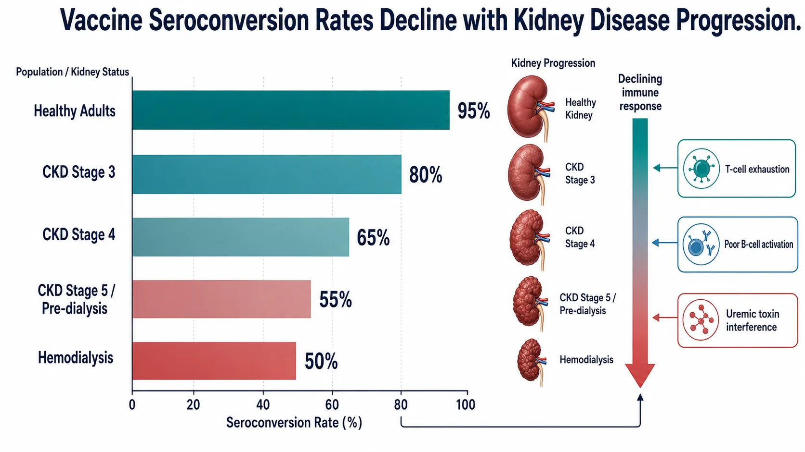
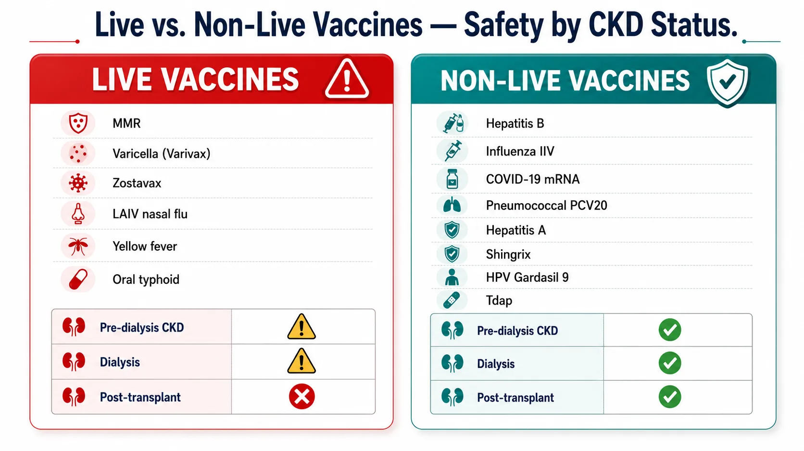
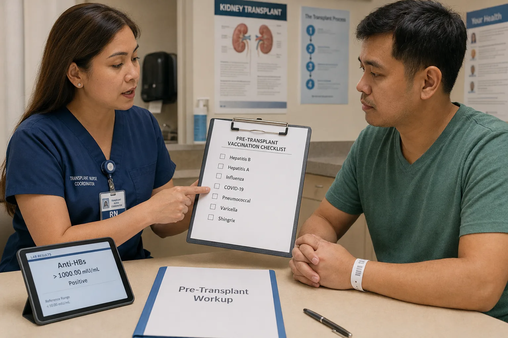
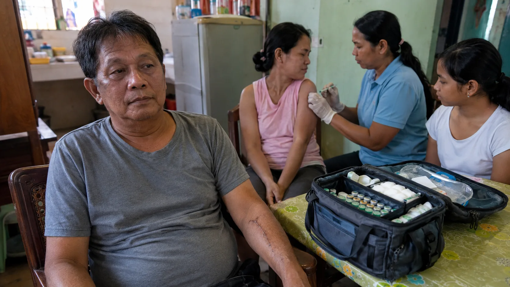
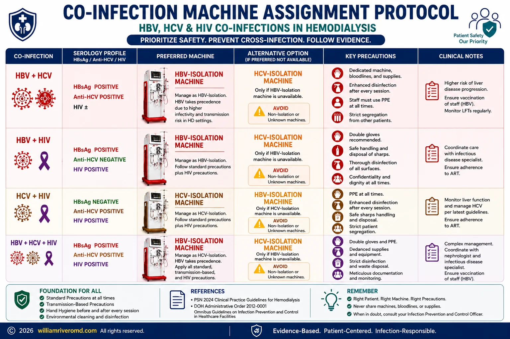

| Viral Infections & Vaccinations Guide for CKD · williamriveromd.com | W.G.M. Rivero MD · FPCP · DPSN · PRC 0101184 · williamriveromd.com · 2026 |
|
Patient Education · Nephrology
Viral Infections & Vaccinations in CKD
Immune suppression in kidney disease, Philippine vaccine schedule for CKD and dialysis patients, transplant readiness, and household protection strategies.
|
💉
W.G.M. Rivero MD
FPCP · DPSN Nephrologist
williamriveromd.com
|
3–5× Higher Infection Risk in CKD |
↓Response Vaccine Efficacy in CKD |
Hepatitis B #1 Priority Vaccine |
Annual Flu Vaccine Required |
Chronic kidney disease causes a state of chronic, low-grade immune dysfunction called uremic immunosuppression. Uremic toxins — substances that accumulate when the kidneys cannot filter the blood — directly impair neutrophil phagocytosis, T-cell proliferation, and B-cell antibody production. The result is a blunted response to both infections and vaccines: seroconversion rates after hepatitis B vaccination drop from >95% in healthy adults to as low as 40–50% in dialysis patients. This is why higher vaccine doses and more frequent boosters are required for CKD patients.
Dialysis patients face additional infection risks beyond immune suppression: vascular access sites (arteriovenous fistulas and central venous catheters) create direct portals for bloodstream infections, and shared dialysis equipment — if not properly sterilized — can transmit blood-borne viruses such as hepatitis B and C. Patients on maintenance immunosuppression after kidney transplantation are at the highest risk of all, susceptible to common, uncommon, and opportunistic infections that would not threaten a healthy person.
| Stage | eGFR | Relative Risk | Key Threats |
|---|---|---|---|
| CKD 1–2 | >60 | 1.5–2× | Influenza, pneumococcus |
| CKD 3 | 30–59 | 2–3× | Hepatitis B, influenza, COVID-19 |
| CKD 4–5 (pre-dialysis) | <30 | 3–4× | All above + shingles (zoster) |
| Hemodialysis | on HD | 4–5× | Hepatitis B (blood-borne!), COVID-19, TB |
| Post-transplant | on IS | 5–10× | ALL infections — live vaccines contraindicated |
CKD patients should not wait until they are sick to think about vaccines. Vaccination BEFORE dialysis and BEFORE transplant is critical — immune response is better at higher eGFR, and live vaccines (MMR, varicella, zoster Zostavax) cannot be given after transplant. Discuss your vaccination status at every CKD 4–5 clinic visit.
| For educational use only. This guide does not replace individualized medical advice from your physician. References: PSMID Immunization Guidelines 2024 · PSN Guidelines · KDIGO 2024 · DOH Philippines vaccine schedule. | williamriveromd.com Page 1 of 9 · williamriveromd.com/guides/viral-infections-vaccinations-ckd |
| Viral Infections & Vaccinations Guide for CKD · williamriveromd.com | W.G.M. Rivero MD · FPCP · DPSN · williamriveromd.com · 2026 |

| For educational use only · Not a substitute for individualized medical advice · williamriveromd.com | williamriveromd.com Page 2 |
| Viral Infections & Vaccinations Guide for CKD · williamriveromd.com | W.G.M. Rivero MD · FPCP · DPSN · williamriveromd.com · 2026 |

| For educational use only · Not a substitute for individualized medical advice · williamriveromd.com | williamriveromd.com Page 3 |
Philippine CKD Vaccination Schedule Recommended immunizations for CKD patients — PSMID & PSN guidelines |
Page 4 · williamriveromd.com |
| Vaccine | CKD (non-dialysis) | Hemodialysis | Post-Transplant | Notes |
|---|---|---|---|---|
| Hepatitis B | 3-dose series (0, 1, 6 mo); double dose (40 mcg) in CKD 4–5; check anti-HBs annually | 40 mcg × 4 doses (0,1,2,6 mo); check anti-HBs every 6 months; booster if <10 mIU/mL | Non-live: SAFE; give if anti-HBs <10 | Most critical — blood-borne risk on HD |
| Influenza | Annual; inactivated IIV preferred | Annual; higher-dose IIV (60 mcg) if available | Annual; inactivated only; NO LAIV | Get before flu season (July–Oct in PH) |
| Pneumococcal | PCV15 or PCV20 × 1, then PPSV23 at ≥8 weeks; PPSV23 booster at 5 years | Same as CKD; prioritize early | Non-live: SAFE | Reduces pneumonia mortality significantly |
| COVID-19 | Primary series + boosters per DOH schedule; mRNA preferred | Same; may need extra dose if poor response | Non-live only; mRNA/protein subunit preferred | Check DOH Philippines for current schedule |
| Hepatitis A | 2-dose series if non-immune | Same | Non-live: SAFE | Check HAV IgG first |
| Zoster (Shingles) | Recombinant Shingrix (RZV) × 2 preferred over Zostavax | RZV × 2 preferred | RZV: SAFE (non-live); Zostavax: CONTRAINDICATED | Give Zostavax BEFORE transplant if needed |
| MMR | 1–2 doses if non-immune and pre-transplant | Same | CONTRAINDICATED after transplant | Give ≥4 weeks before transplant |
| Varicella | 2 doses if non-immune, pre-transplant | Same | CONTRAINDICATED after transplant | Must be ≥4 weeks before immunosuppression |
| HPV | Recommended for CKD patients <45 yrs | Same | Non-live: SAFE | Cervarix (2-dose) or Gardasil-9 (3-dose) |
| Tdap/Td | Every 10 years | Same | Non-live: SAFE | Ensure household contacts are vaccinated too |
Hepatitis B is the most dangerous infection for dialysis patients — blood-borne transmission occurs via shared machines, inadequate sterilization, and multi-dose vials. Confirm your anti-HBs titer every 6 months. If <10 mIU/mL — report to your dialysis nurse immediately for a booster dose. Do not wait for your next scheduled appointment.
| PSMID Immunization Guidelines 2024 · PSN Guidelines · KDIGO 2024 · DOH Philippines · Educational use only. | williamriveromd.com · Page 4 of 9 |
| Viral Infections & Vaccinations Guide for CKD · williamriveromd.com | W.G.M. Rivero MD · FPCP · DPSN · williamriveromd.com · 2026 |

| For educational use only · Not a substitute for individualized medical advice · williamriveromd.com | williamriveromd.com Page 5 |
Key Viral Infections in CKD · Household Protection Prevention, recognition, and when to seek help |
Page 6 · williamriveromd.com |
🔵 Influenza
Sudden high fever, severe muscle aches, and extreme fatigue. CKD patients are at risk of acute kidney injury on CKD from dehydration and the direct viral effect on tubular cells. Annual inactivated flu vaccine is mandatory. If symptoms begin: start oseltamivir (Tamiflu) within 48 hours — do not wait for test results. Call your nephrologist.
|
🔵 COVID-19
CKD and dialysis patients have significantly higher COVID-19 mortality compared to the general population. Follow the high-dose vaccination schedule (extra doses for dialysis patients). Early antiviral therapy with Paxlovid (nirmatrelvir/ritonavir) is effective — but check drug interactions with immunosuppressants (tacrolimus levels can spike). Report to your nephrologist at first symptoms.
|
🔴 Hepatitis B
May be completely asymptomatic for years — detected only on blood tests. Transmitted via HD equipment, blood transfusions, tattooing, and unprotected sex. Mandatory anti-HBs titer check every 6 months for all HD patients. If HBsAg becomes positive, patient must be isolated to a dedicated HBsAg+ dialysis station immediately. Annual liver ultrasound for chronically infected patients.
|
🟡 Herpes Zoster (Shingles)
Painful, blistering rash following a dermatomal distribution — one side of the body or face. CKD patients are at significantly higher risk due to T-cell dysfunction. Start acyclovir or valacyclovir within 72 hours of rash onset for best results. Dose-adjust for kidney function. Shingrix (RZV) vaccine significantly reduces both the incidence and severity of shingles — preferred over the older Zostavax live vaccine.
|
Cocooning means protecting a vulnerable person by ensuring that everyone who lives with or cares for them is immunized — reducing the chance that an infectious disease enters the home. For CKD and dialysis patients in multi-generational Filipino households, cocooning is especially important.
Separate Area for HBsAg+ Patients
DOH and KDIGO standards require that Hepatitis B surface antigen-positive patients be dialyzed in a physically separate area with dedicated machines. Ask your dialysis unit if this standard is being met.
|
Dedicated Staff for HBsAg+ Section
Staff caring for HBsAg+ patients should not simultaneously care for HBsAg-negative patients during the same session. Cross-contamination via gloves, equipment, and multi-dose vials is a known transmission route.
|
Report Symptoms SAME DAY
Report any jaundice (yellowing of eyes or skin), unexplained fatigue, dark urine, or fever during or after a dialysis session to the dialysis nurse on the same day. Do not wait for the next session.
|
| KDIGO 2024 · PSMID Immunization Guidelines 2024 · DOH Philippines · Educational use only. | williamriveromd.com · Page 6 of 9 |
| Viral Infections & Vaccinations Guide for CKD · williamriveromd.com | W.G.M. Rivero MD · FPCP · DPSN · williamriveromd.com · 2026 |

| For educational use only · Not a substitute for individualized medical advice · williamriveromd.com | williamriveromd.com Page 7 |
| Viral Infections & Vaccinations Guide for CKD · williamriveromd.com | W.G.M. Rivero MD · FPCP · DPSN · williamriveromd.com · 2026 |

| For educational use only · Not a substitute for individualized medical advice · williamriveromd.com | williamriveromd.com Page 8 |
When to Seek Help · Travel Vaccines · Quick Reference Emergency signs · Travel vaccination for CKD · Safe vs. contraindicated vaccine list |
Page 9 · williamriveromd.com |
| Destination | Required / Recommended Vaccine | CKD Notes |
|---|---|---|
| Domestic Philippines | Typhoid (Vi polysaccharide), Hepatitis A | Safe — both non-live; Vi polysaccharide typhoid is preferred over oral Ty21a (live) |
| Southeast Asia | Japanese Encephalitis (JEV) | Inactivated IXIARO — safe for all CKD stages including post-transplant |
| Africa / South America | Yellow Fever | LIVE — avoid if immunosuppressed; obtain medical exemption certificate from travel medicine clinic |
| Meningococcal belt (Hajj, Sub-Saharan Africa) | Meningococcal ACWY | Safe — non-live conjugate vaccine; no dose adjustment needed |
Yellow fever vaccine is a live attenuated vaccine — it is contraindicated in post-transplant patients and in anyone on significant immunosuppression. If travel to yellow fever-endemic areas is required, obtain a medical exemption certificate from an accredited travel medicine clinic. Some countries accept the exemption in lieu of proof of vaccination.
✅ Non-Live Vaccines — SAFE at All CKD Stages Including Post-Transplant
Hepatitis B (higher dose required in CKD 4–5 and HD)
Influenza (IIV) — inactivated only; annual Pneumococcal (PCV15, PCV20, PPSV23) COVID-19 (mRNA or protein subunit) Hepatitis A Shingrix (RZV) — recombinant zoster vaccine HPV (Cervarix or Gardasil-9) Tdap / Td Meningococcal ACWY JEV (IXIARO) — inactivated Japanese encephalitis Typhoid Vi polysaccharide (injection form) |
🚫 Live Vaccines — Give BEFORE Transplant Only · CONTRAINDICATED After Immunosuppression
MMR (measles, mumps, rubella)
Varicella (VZV) — chickenpox vaccine Zostavax — live zoster vaccine (use Shingrix instead) Yellow Fever (YF-Vax) LAIV — live attenuated influenza (nasal spray) Oral typhoid Ty21a — capsule form All live vaccines must be completed ≥4 weeks before starting immunosuppressive therapy. Once transplanted, they are permanently contraindicated while the patient is on anti-rejection medications. |
| Reference: PSMID Immunization Guidelines 2024 · PSN Guidelines · KDIGO 2024 · For educational use only · Confirm all vaccines with your nephrologist · williamriveromd.com · 2026 | williamriveromd.com Page 9 of 9 |